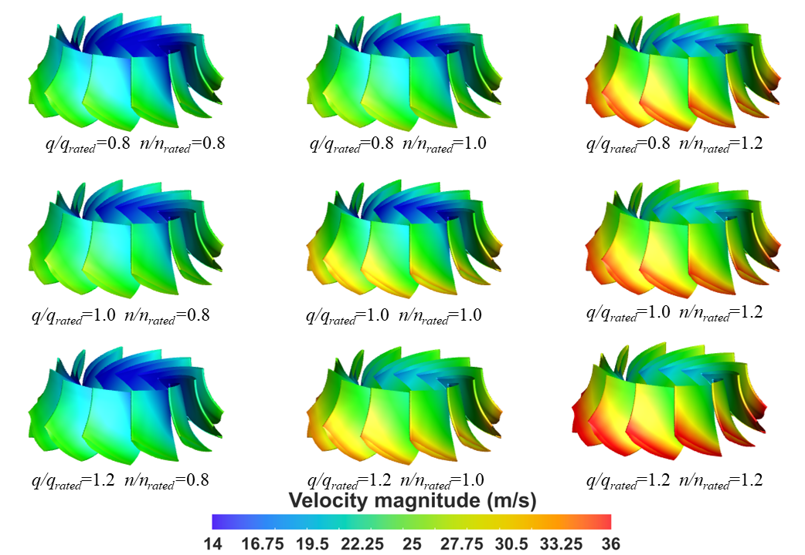
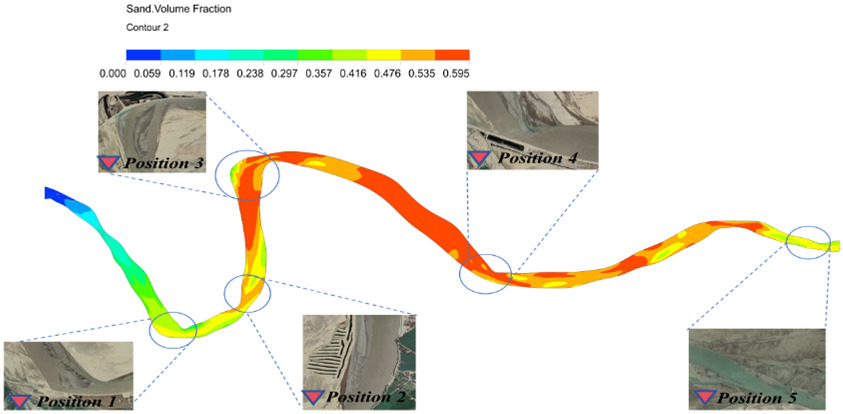

Energia, Sustentabilidade e Recursos Renováveis
Esta linha conecta modelagem computacional e engenharia de processos para investigar eficiência energética, uso de recursos renováveis e estratégias de sustentabilidade em diferentes aplicações.
O objetivo é apoiar a transição energética com soluções técnicas de maior impacto, conciliando desempenho operacional, redução de emissões e uso responsável de recursos.
Entre as aplicações estão a avaliação do potencial energético da biomassa e a caracterização de recursos renováveis, relacionando propriedades dos materiais ao seu aproveitamento e à eficiência dos processos de conversão.

